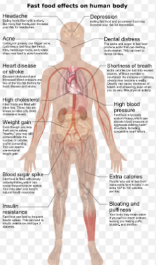

Today, eating processed foods and fast foods may kill more people prematurely than cigarette smoking. in america 71 pecent of americans are obese or overweight. fast food is bad for you because 1
fast food is bad for you becauyse of many reasons obesity, insulin resistance, type 2 diabetes, and various cardiovascular conditions. This is because most fast food is high in sugar, salt, saturated fat, trans fats, processed ingredients, and calories. It is also generally low in antioxida
Fast Food's Effects on 8 Areas of the Bodyoods that rapidly vanish or 'melt in your mouth' signal to your brain that you're not eating as much as you actually are. also because of all the artifical sweetners sugar carbohydroates etc make ur brain crave it much more even though it is very unhealthy for you
it can increase heat disease and stroke sit can cause high cholestrol whihc is extremely unhealthy for you well all of these are and some bad life prob;llems will also be short breath and blood sugar spikes bloating a puffiness and you will gain diabetes and that will shorten your life psan and you will have to take insolin